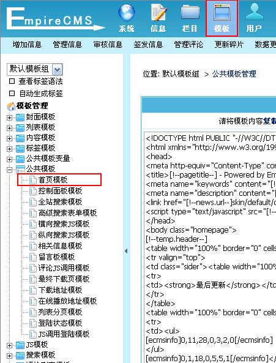
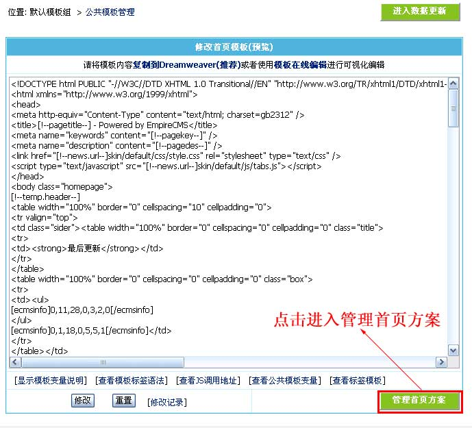
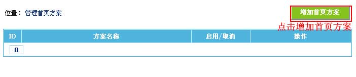
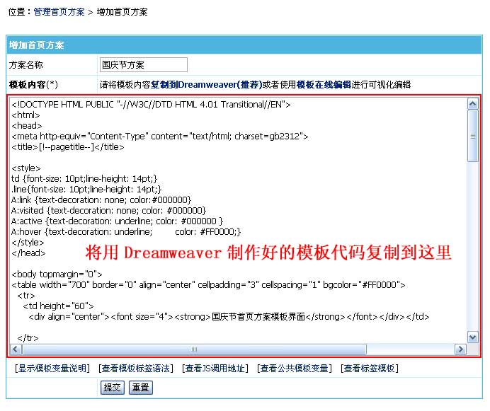
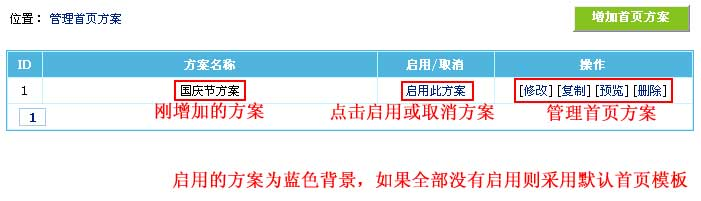

| 多首页方案功能，可以将某一方案作为临时首页，特别是在节假日制作特别首页非常有用。 |
|
||
| 一、增加首页方案 |
| 1、登录后台，单击“模板”菜单，选择“首页模板”子菜单，进入修改首页模板界面： |
|  |
| 2、进入修改首页模板界面： |
|  |
| 3、进入“管理首页方案”按钮，进入管理首页方案界面： |
|  |
| 4、进入“增加首页方案”按钮，进入增加首页方案界面： |
|  （支持的模板变量和标签同首页模板） |
| 二、管理首页方案： |
| 1、增加首页方案后，返回管理首页方案界面： |
|  |
| （启用的方案为蓝色背景，如果全部方案没有启用则采用默认首页模板。） |